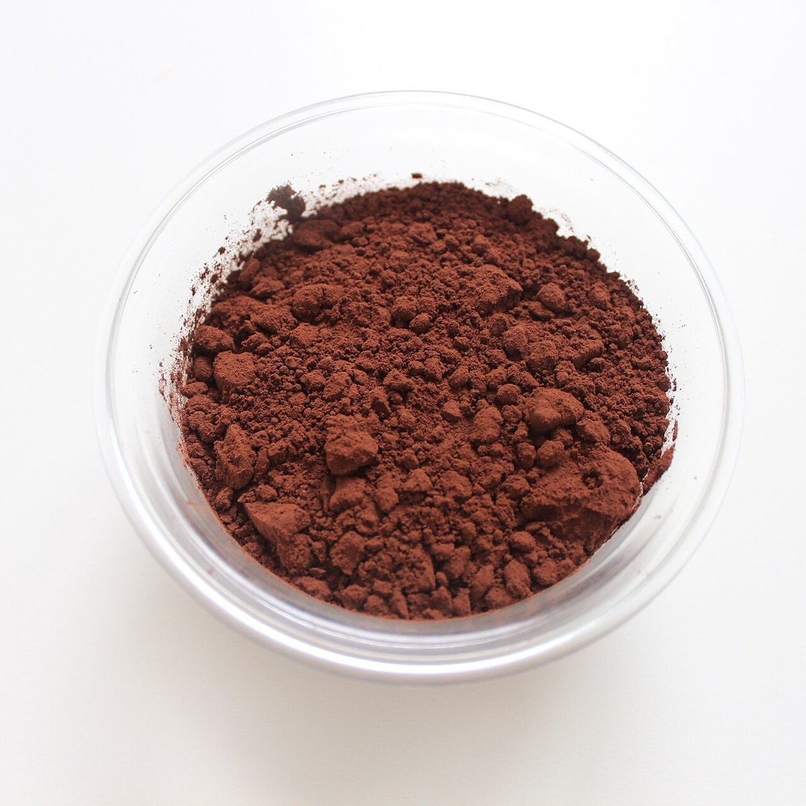
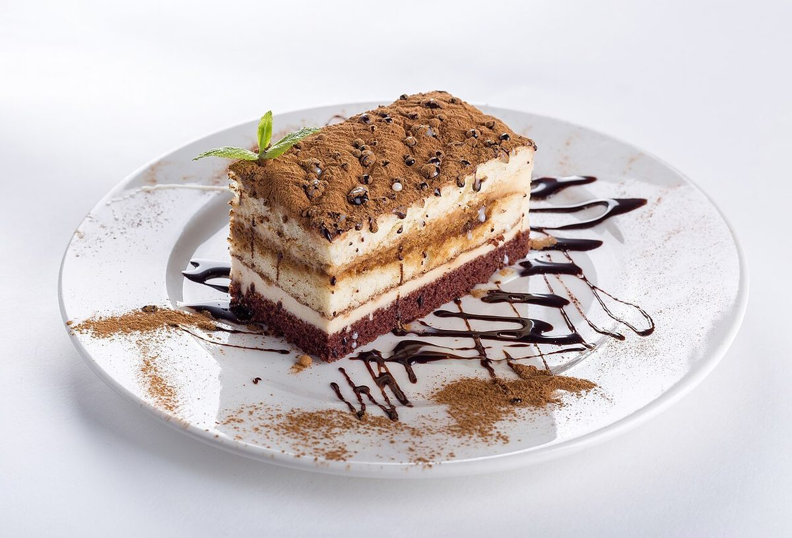

パティスリー / 群馬県館林市
パティスリーウルポナ
群馬県館林市のパティスリー「ウルポナ」のご案内ページです。営業時間やメニューなどの詳しいことは準備中。まずはInstagramをのぞいてみてください。

制作側の連想
テンパリング曲線の三つの温度
このテーマ「テンパリング曲線の三つの温度」は、制作側の連想で、お店の理念・由来とは無関係です。店名の由来は分かりません。パティスリーという業種から、チョコレートをなめらかに仕上げる温度管理(一般に50度前後で溶かし、27度前後まで下げ、31度前後に整えると言われます)を思い浮かべ、ページ全体を「温度の目盛り」に見立てました。お店でチョコレートを扱っているかどうかは分かっていません。
三つの温度(イメージ)
溶かす・冷ます・整える
写真はお店のものではなく、国外または撮影地不明のフリー素材です。
- 50°
溶かす

撮影地不明のイメージ - 27°
冷ます

撮影地不明のイメージ - 31°
整える

撮影地不明のイメージ
ご案内
お店のこと(確認できたものだけ)
| 所在地 | 〒374-0027 群馬県館林市富士見町13-13-9 |
|---|---|
| 電話 | 0276-51-4429 |
| 営業時間 | 準備中 |
| 定休日 | 準備中 |
| ご予約 | 準備中 |
| 駐車場 | 準備中 |
| SNS | Instagram @__ulupona |